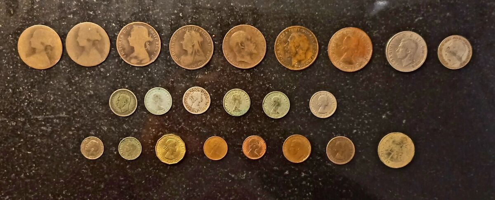

.jpg)
Why Restore Coins?
Restoring coins can help maintain their value and aesthetic appeal. Proper care ensures they remain in good condition for years to come.
Tips for Coin Restoration
- Handle coins carefully: Always use clean, dry hands or wear cotton gloves to prevent damage.
- Avoid harsh chemicals: Use mild solutions like distilled water or soapy water to clean coins.
- Dry thoroughly: Pat coins dry gently with a soft cloth to prevent water spots.
- Store coins properly: Use airtight containers or coin albums to keep them safe from humidity and dust.
- Seek professional help: For rare or valuable coins, consult a professional restorer.
Tricks for Coin Care
Here are some additional tricks to ensure your coins stay in excellent condition:
- Use a soft-bristled brush to remove dirt or grime from hard-to-reach areas.
- Avoid polishing coins with abrasive materials, as this can cause scratches.
- Keep coins away from extreme temperatures or direct sunlight.
- Use silica gel packs in storage areas to reduce moisture.
